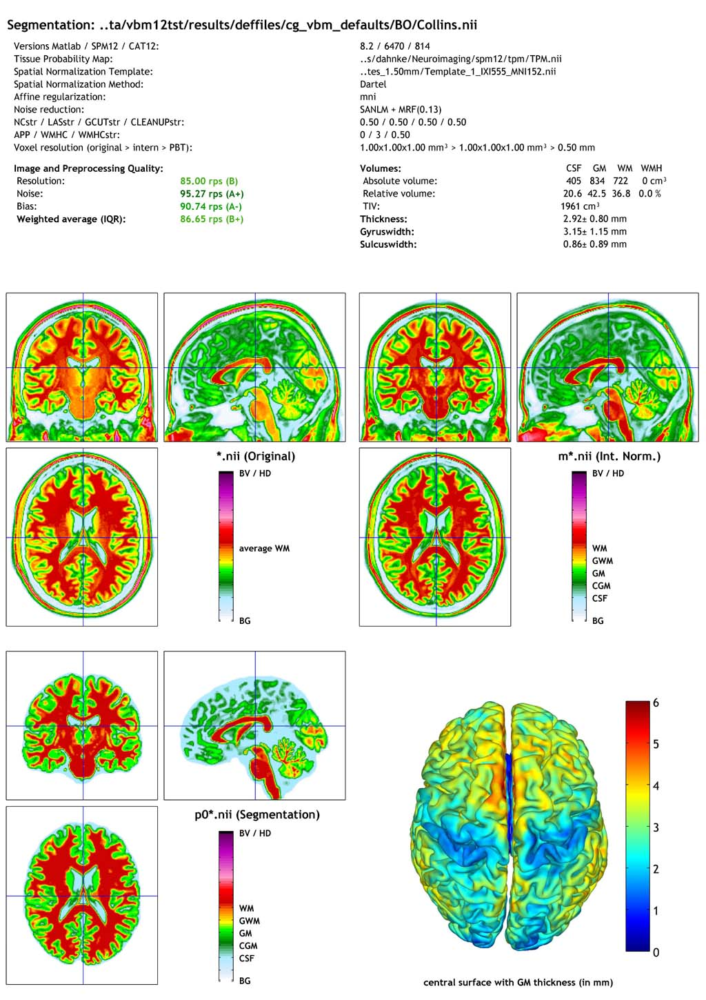

Naming convention of output files
Please note that the resulting files of CAT12 are organized in separate subfolders (e.g. mri, report, surf, label). If you don't want to use subfolders you can change the option "cat.extopts.subfolders" in cat_defaults.m to "0".
Images (saved in subfolder "mri")
| Segmented Images: | [m[0]w]p[0123]*[_affine].nii |
| Bias, noise and intensity corrected T1 image: | [w]m*.nii |
| Jacobian determinant:: | wj_*.nii |
| Deformation field (inverse field): | y_*.nii (iy_*.nii) |
Image space prefix: |
|
| m | modulated |
| m0 | modulated non-linear only (expert mode only) |
| w | warped (spatially normalized using DARTEL) |
Image space extension: |
|
| _affine | affine registered only |
Image data prefix: |
|
| p | partial volume (PV) segmentation |
| 0 | PV label |
| 1 | GM |
| 2 | WM |
| 3 | CSF |
Surfaces in native space (saved in subfolder "surf")
SURF.TYPE.*.gii
| SURF | left, right both hemisphere [ lh | rh ] |
| TYPE | surface data file [ central | sphere | thickness | gyrification | ... ] |
| central - coordinates and faces of the central surface | |
| sphere - coordinates and faces of the spherical projection of the central surface | |
| sphere.reg - coordinates and faces of the sphere after spherical registration | |
| thickness - thickness values of the surface | |
| sqrtsulc - sqrt-transformed values of sulcal depth based on the euclidean distance between the central surface and its convex hull | |
| gyrification - gyrification values based on absolute mean curvature | |
| fractaldimension - fractal dimension values (cortical complexity) |
Surfaces in (normalized) template space (after resampling and smoothing; saved in subfolder "surf" by default)
FWHM.SURF.TYPE.RESAMP.*.gii
| FWHM | filtersize in FWHM after smoothing (e.g. s15) |
| SURF | left, right, or both hemispheres [ lh | rh | mesh] |
| TYPE | surface data file [ thickness | gyrification | fractaldimension | ... ] |
| thickness - thickness values of the surface | |
| sqrtsulc - sqrt-transformed values of sulcal depth based on the euclidean distance between the central surface and its convex hull | |
| gyrification - gyrification values based on absolute mean curvature | |
| fractaldimension - fractal dimension values (cortical complexity) | |
| RESAMP | resampling to 164k or 32k mesh [ resampled | resampled_32k ] |
Images and surface of longitudinal data
After processing longitudinal data the filenames additionally contain an "r" between the original filename and the other prefixes to indicate the additional registration step. Please also note that only the bias, noise and intensity corrected average image of all time points for each subject is saved.
Reports (saved in subfolder "report")
Global morphometric and image quality measures are stored in the cat_*.xml file. This file also contains other useful information about software versions and the used options for preprocessing the data. You can use the cat_io_xml function to read data from xml-files. Furthermore, a report for each data set is saved as pdf-file catreport_*.pdf.
Regions of interest (ROI) data (saved in subfolder "label")
ROI data is optionally saved as xml-file catROI_[ATLASNAME]_*.xml.